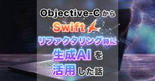

SPIDERPLUS Tech Blog
https://techblog.spiderplus.co.jp/
建設SaaS「スパイダープラス」のエンジニアとデザイナーのブログ
フィード

Objective-CからSwiftリファクタリング時に生成AIを活用した話
SPIDERPLUS Tech Blog
SPIDERPLUSを2011年9月に提供しはじめた当初からiOSのメイン言語としてObjective-Cを使って気づけば10年以上が経過。Swiftへの移行を実現するために生成AIを活用して省力化した話を紹介します！
2日前
DXによる顧客課題の解決と顧客との共同開発を進める専門部署を新設！
SPIDERPLUS Tech Blog
昨年9月に誕生した部署「プロフェッショナルサービス部」が何のためにどんなことをしているのか、開発組織との関わり、働く面白さから足元の課題まで、紹介いたします。
5日前

AWS re:Invent2024参加レポート！紫の一週間
SPIDERPLUS Tech Blog
2024年12月2日から5日までラスベガスで開催されたAWS re:Invent 2024に行ってきたレポートをお送りします！
23日前
NeovimでNvChad×Copilotを試す
SPIDERPLUS Tech Blog
VSCode+Copilotプラグインでなんとなく書いてたのをターミナル上で作業を完結させたいという思いが募り、Copilotの環境に移行の際、簡単に動作確認する環境を組んだのでその紹介をします。
1ヶ月前
Reactコンポーネント以外のロジックコードのHMR化
SPIDERPLUS Tech Blog
Reactコンポーネント以外のロジックのjsをHMR対応した時のことをサンプルコードを添えて書きます
2ヶ月前
エンジニアリングマネージャー1年目の開発チーム運営思想
SPIDERPLUS Tech Blog
長い間マネージメント職を敬遠していたのが今ではとても楽しくマネージャーとして仕事をしていることを踏まえて、開発チームの運営をする上で大切にしている価値観や考え方について綴っています。
2ヶ月前
Bug Tracking Systemで「バグを活かす」話
SPIDERPLUS Tech Blog
今日は、日々不具合と格闘しているQAチームにおいて、「バグを活かす方法」について紹介したいと思います。バグの発覚は避けるべき問題である一方で、発覚したバグの管理は、ソフトウェアの品質向上をさせるためにとても重要なプロセスといえます。
3ヶ月前
顧客理解勉強会をしてみて実感したこと
SPIDERPLUS Tech Blog
実装する機能がどのような課題を解決し、どのような価値を提供するかを見失わず、顧客視点を意識した開発のために勉強会を主催してみて実感したことを綴りました
4ヶ月前
入社1ヶ月目にして勉強会を開催したら楽しかった話
SPIDERPLUS Tech Blog
入社1ヶ月目にして勉強会を開催してSwift準拠でObjective-Cを学んだらリプレイスのイメージは湧くし、先輩からプロダクトの歴史的なことも補ってもらえてとても楽しかったお話です。
4ヶ月前
試行錯誤して身につけた、私がエンジニアとして働くうえでの心の装備
SPIDERPLUS Tech Blog
異業種転職してきたエンジニアとして、試行錯誤して身につけたマインドセットについてお話します。
4ヶ月前
ドキドキの3分間！ミニLT会で発表スキルと関係を深める話
SPIDERPLUS Tech Blog
開発部門で散発的に開催してきたLT大会について、直近の内容を紹介しつつ開催することの意義について考えます。
5ヶ月前
iOSDC Japan 2024 スパイダープラスブースの魅力一挙公開！！
SPIDERPLUS Tech Blog
エンジニア主体に運営、企画するiOSDC Japan 2024のブースの魅力や、ご来場の皆さんにお渡しするノベルティについても一挙紹介いたします！
6ヶ月前
Github Projectsの進捗率をスプレッドシートで見える化した話
SPIDERPLUS Tech Blog
GitHub Projectsのroadmap機能では足りないIssueの進捗状況管理をスプレッドシートで自動化してみた話。
6ヶ月前
個人としてのテックカンファレンス参加を活かしてスパイダープラスのブース運営を工夫した話
SPIDERPLUS Tech Blog
数百人規模のテックカンファレンスに月一ペースで参加している経験を、会社のブース運営に投入してみる話です
6ヶ月前
既存プロジェクトをHMR対応した話(Vite利用)
SPIDERPLUS Tech Blog
既存のプロジェクトにHMRを導入した時のことを書きます。細かい設定は、システム構成が異なるとあまり役に立たないので、設定の考え方を中心に書いていきます。
6ヶ月前
iOSDC Japan 2024へ出展します！
SPIDERPLUS Tech Blog
スパイダープラスではiOSDC Japan 2024に昨年に引き続きゴールドスポンサーとして協賛＆ブース出展を行います。記事内では初のプロポーザル採択についても紹介しているのでご来場にお役立てください。
7ヶ月前
Slack通知をカスタマイズした件 〜システム監視の未来へ向けて〜
SPIDERPLUS Tech Blog
システム監視と通知は、現代のIT環境において欠かせない要素です。適切なツールと手法を選び、効率的に運用することで、システムの安定性を保つことができます。今回はAWSサービスを使用したSlack通知について、構成したアーキテクチャや具体的な運用例をご紹介します。
7ヶ月前
開発生産性を向上させるXcodeの便利機能／設定
SPIDERPLUS Tech Blog
Xcodeコマンド／機能を紹介します。普段当たり前のように使っているものながら、効率が高まることで、開発中のストレス軽減を感じています。
7ヶ月前
ログが助けるバグ調査
SPIDERPLUS Tech Blog
ある機能が期待した動作をしなくなる…ログを確認してもエラーが起きているわけでもなく、静かに不具合にエンジニアはどう対処したのでしょう。発見、仮説、対処からちょっとした宝を得るまでのお話です。
7ヶ月前